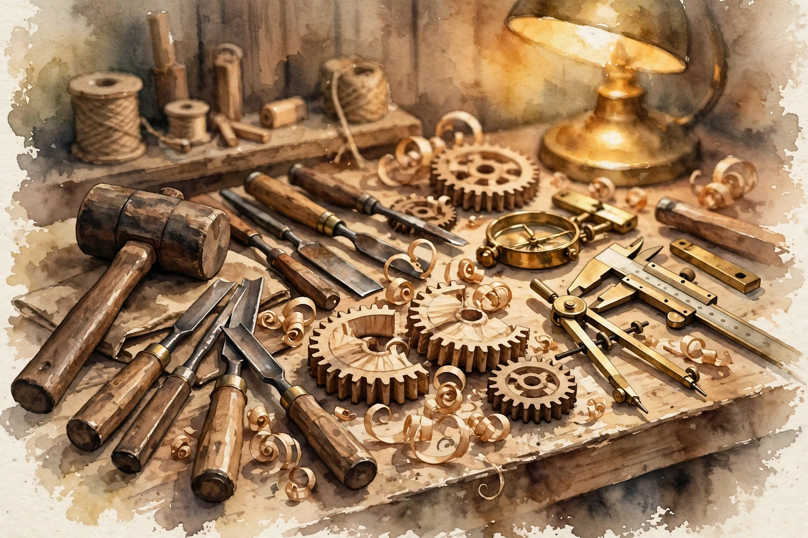

Naval Ravikant · Arm Yourself · Companion
Specific Knowledge
The hardest idea in the tweetstorm: the knowledge that cannot be taught, found by pursuing genuine curiosity, revealed by what feels like play to you. Why trainable skill pays minimum wage, and why the 90-percent person earns hundreds of times more than the 80-percent person.

Illustration. The workbench: knowledge earned by hand. AI-generated watercolor made for this page.
Watch. The official Naval podcast episode video. Use the chapter menu above to jump to any section of this companion as you listen.
The Wisdom Index: every nugget in this companion
00:00
Four parts of getting paid
Nivi frames the session: the skills are specific knowledge, accountability, tools, and judgment. The opening tweet, in his words: "Arm yourself with specific knowledge accountability and leverage."
Naval unpacks the economics in one line each. If you want money, get paid at scale. Why you and not someone else: that is accountability. At scale: that is tools. You getting paid rather than someone else: that is specific knowledge.
Wisdom nugget 1
Source factDecompose the paycheck
What happened. Naval maps each word of the tweet to a mechanism: accountability answers why you, tools answer at what scale, specific knowledge answers why not someone else.
Why it matters. Most career advice collapses these. The decomposition tells you which part is broken when pay stalls.
Principle. Diagnose your income: missing scale means missing tools, missing premium means missing specific knowledge, missing credit means missing accountability.
00:02
The most interesting things cannot be taught
Specific knowledge is the hardest idea in the tweetstorm to convey, and the most misunderstood. The school model says everything can be taught. Naval says the opposite: the most interesting things resist teaching. Everything can be learned, but the learning comes from elsewhere: traits in your DNA, soft skills from childhood that resist adult instruction, brand-new frontiers nobody understands yet, or pattern-matching inside complex environments on the job.
The classic case is investment judgment, but it applies anywhere: running a fleet of trucks, forecasting weather. Wherever the environment is too complex for a textbook, specific knowledge lives.
The most interesting things cannot be taught.
Naval Ravikant, from the episode
Wisdom nugget 2
Source factLearn what cannot be taught
What happened. Naval lists the four sources of specific knowledge: DNA, childhood, the frontier, and on-the-job pattern matching.
Why it matters. If your edge comes from a classroom, it is not an edge. Classrooms mass-produce.
Principle. Put yourself where the textbook ends: new fields, messy operations, live decisions. That is where unteachable knowledge grows.
00:04
If it can be trained, it pays minimum wage
The replaceability test is brutal and clear. If you can learn it in a class, someone else can learn it in a class too. Then it can be mass-produced, mass-trained, and eventually handed to computers and robots. Your pay collapses to the cost of instruction plus the return on that instruction, which is to say, the minimum the market must pay to get someone to do it.
Schooling still matters: you need schooling to capitalize on specific knowledge. But the part you get paid for is the part nobody can train.
Illustration. The workbench: knowledge earned by hand, not by lecture. AI-generated watercolor made for this page.
Wisdom nugget 3
Source factPrice the untrainable part
What happened. Naval argues that trainable skill commoditizes down to instruction cost, so the premium sits entirely in the untrainable remainder.
Why it matters. It reframes education: school is the entry ticket, not the product. The product is what school cannot give.
Principle. Ask of every skill you hold: could a course teach this in a semester? If yes, it is not your edge.
00:06
Found by pursuing your genuine curiosity
"Specific knowledge can be found by pursuing your genuine curiosity." Not by studying the hottest job, not by following where investors point. The psychology-degree example makes it concrete: a natural salesperson with a psychology degree becomes formidable, because the degree multiplies existing talent. An introvert studying psychology to learn sales stays mediocre.
Specific knowledge also lives at the edge, where things are just being figured out. Half-commitment loses badly here: with 1,000x tools in play, the person right 90 percent of the time earns hundreds of times more than the one right 80 percent, because correctness compounds under force multiplication.
80 percent vs 90 percent at 1,000x force multiplication
Two people, same 1,000x tools. The one who is right slightly more often earns hundreds of times more.
Source. Episode: the 1,000x force-multiplication example with 80 and 90 percent accuracy. The 300x bar is illustrative of hundreds of times more.
Wisdom nugget 4
Source factGo all in on the obsession
What happened. Naval says curiosity beats trend-chasing, and that at high force multiplication small accuracy gaps become enormous pay gaps.
Why it matters. Dabbling in a hot field puts you against obsessives with 1,000x tools. You will lose by hundreds of times, not by a little.
Principle. Pick the thing you cannot stop thinking about, then be the most correct person in it.
00:08
It feels like play to you
You do not find specific knowledge by reasoning about it. You find it by looking backward at your own life and noticing what you were already good at. Naval wanted to be a scientist. His moral hierarchy still puts scientists at the top of the production chain for humanity. But his actual time went to business, tinkering with technology, and selling people on ideas. What feels like play to him looks like work to everyone else.
The skills underneath: salesmanship, analytical thinking about money, absorbing data and breaking it down, tinkering with technology. All play to him. All work to others.
All of this stuff feels like play to me, but it looks like work to others.
Naval Ravikant, from the episode
Toy: the specific-knowledge finder
Answer four questions. The episode says specific knowledge feels like play to you and looks like work to others.
Wisdom nugget 5
Source factAudit your play
What happened. Naval describes his own misfire, wanting to be an astrophysicist while his real talents were business, and says the tell is the play-work gap.
Why it matters. Your edge is visible in your history, not in your aspirations. The things you do for fun are market intelligence about yourself.
Principle. List what feels like play to you and looks like work to others. That list is your specific knowledge inventory.
00:10
Your mother knew before you did
The story Naval tells against himself: at 15 or 16, he told a friend he wanted to be an astrophysicist, and his mother called from the kitchen: "No, you're going to go into business." He dismissed it. She was right. She watched him walk down the street critiquing the pizza parlor's slice pricing, toppings, and ordering process. She saw the business mind before he did.
Specific knowledge is often observed before it is chosen, and often by people who know you well, revealed in situations rather than declared in plans.
Illustration. The statue in the stone: specific knowledge is found by observation, not invention. AI-generated watercolor made for this page.
Wisdom nugget 6
Source factAsk the people who watched you grow
What happened. Naval's mother spotted his business curiosity years before he admitted it, from small observed behaviors.
Why it matters. You are the worst observer of your own patterns. You rationalize. Others just watch.
Principle. Ask three people who knew you at 15 what you were obsessed with. Their answer is probably your specific knowledge.